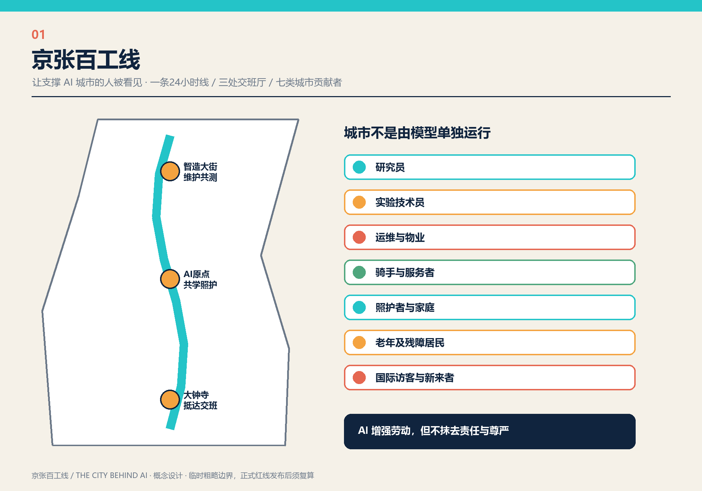
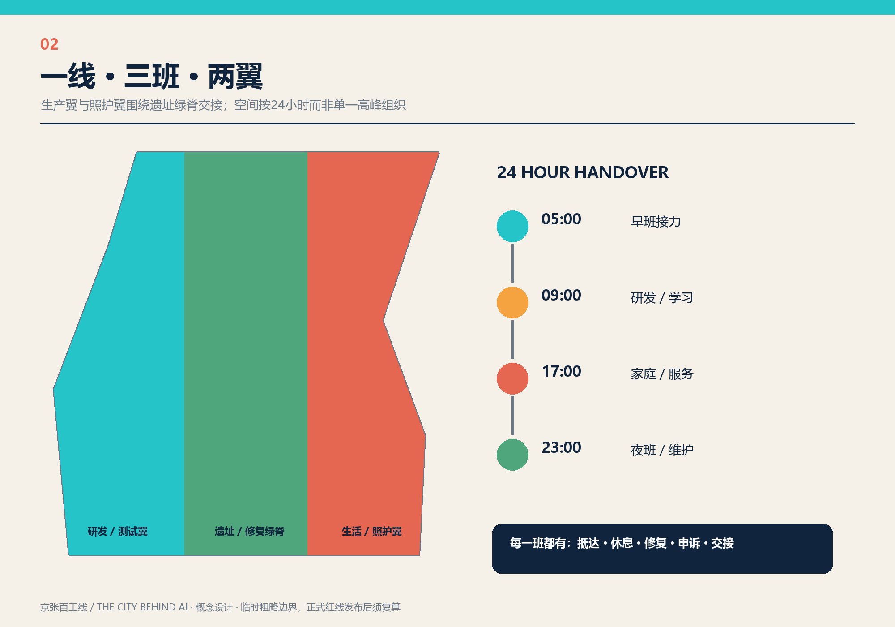
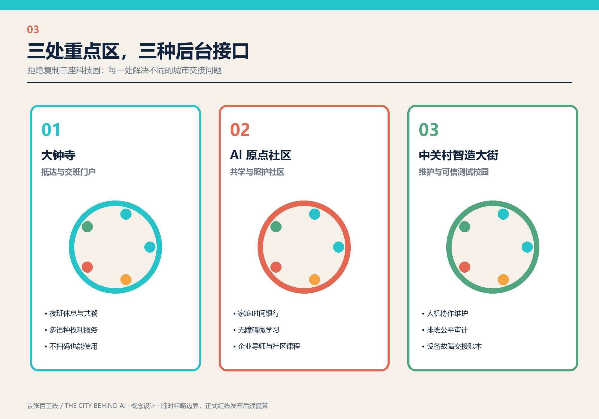
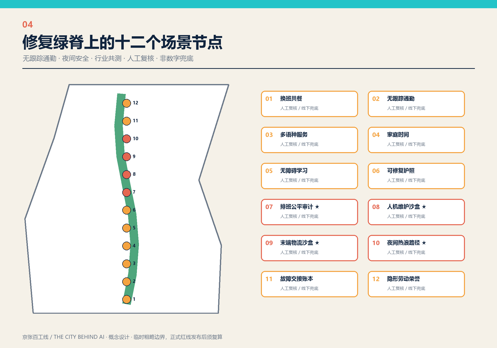
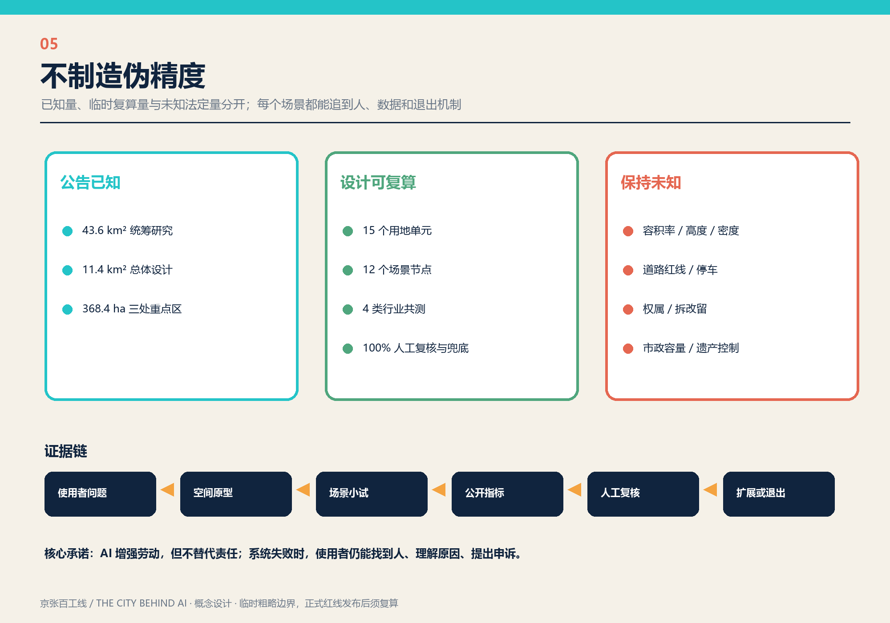

统筹研究
43.6 km²
产业、人才、劳动、通勤、照护与基础设施链。
让支撑 AI 城市的人被看见。以京张遗址绿脊为一条24小时公共基础设施，把研究、实验、运维、物流、服务与照护组织成可见、可交接、可验证的城市后台。

产业、人才、劳动、通勤、照护与基础设施链。
一线、三班、两翼与八条交接支线。
抵达交班、共学照护、维护共测。

研发、可信测试、开放工具与维护学习。
慢行、气候适应、修复教育与公共交班。
托育、家庭时间、无障碍学习和生活支持。


场景节点
概念绿脊比例
三处交班厅公共空间

| 模块 | 输出 | 检查 |
|---|---|---|
| 空间 | 九个 GeoJSON 图层 | 边界、拓扑、面积复算 |
| 场景 | 十二张卡、四类行业共测 | 人工复核、非数字兜底、退出机制 |
| 实施 | 八项目、三阶段、四项年度事件 | 责任人、维护费、触发条件 |
| 证据 | 23项合规、15项深度、专业标准 | 来源、假设、未知量可追溯 |
本地依据：公开征集公告、智能体任务书、项目资料包、来源登记、规划限制和专业标准。国际案例只作背景研究，包括 NIST AI RMF、EU TEF、Punggol、Smart Kalasatama、SHIFT London、Barcelona 22@ 与 Quayside。